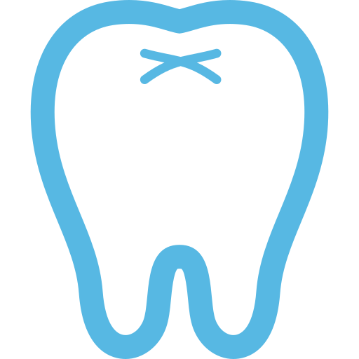
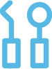
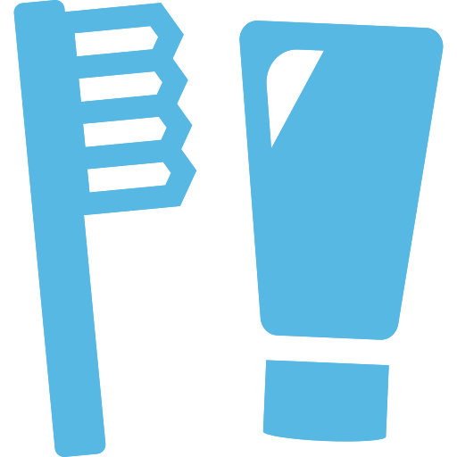
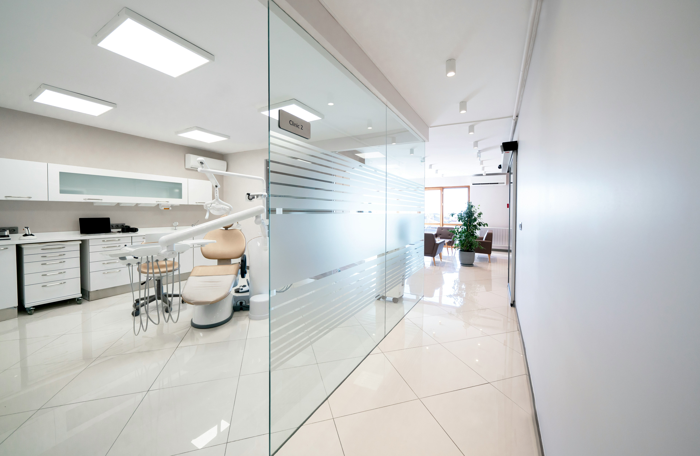
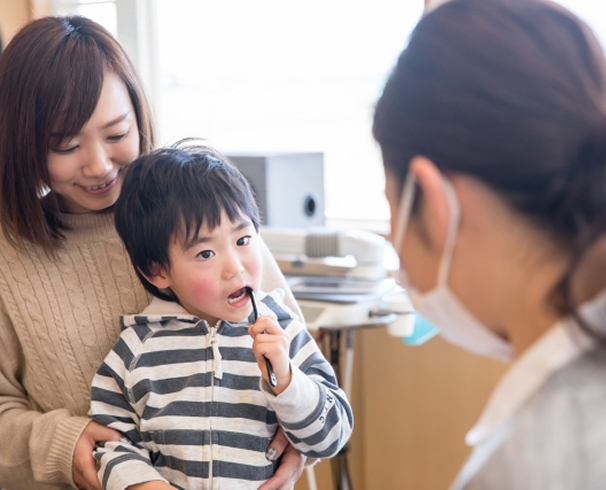
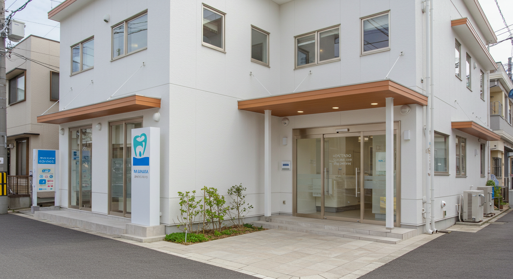

むし歯や歯周病の治療を行い、患者さんの健康な歯を守るための基本的なケア を提供します。
Clinic Concept クリニック理念
地域の皆様が安心して通える、家族みんなのための歯科医院
単に「治療をする」のではなく、
患者さんの不安を和らげ、笑顔で通えることを大切にし、
最新の設備とやさしい診療で家族みんなの健康な歯を守れるようサポートしていきます。
Our Services 診療内容
一般歯科
小児歯科
お子さまの歯の健康を守るために、むし歯の予防と治療を中心に、楽しく通える歯医者 を目指しています。
口腔外科
親知らずの抜歯や顎関節症などを専門的に行い、痛みや負担の少ない治療を提供します。
予防歯科
むし歯や歯周病を防ぐことを目的とし、定期検診とクリーニングで健康な歯を守ります。
Features 特徴

清潔で快適な診療環境
患者さんに安心して治療を受けていただけるよう、衛生管理を徹底 し、最新の滅菌システムを導入。院内は明るく、清潔感のある快適な空間づくりを心がけています。

小さなお子さまからご年配の方まで通いやすい
お子さまが楽しく通えるように、キッズスペースを完備。また、ご年配の方やお身体が不自由な方にも安心してご来院いただけるよう、バリアフリー設計 になっています。
Access アクセス
